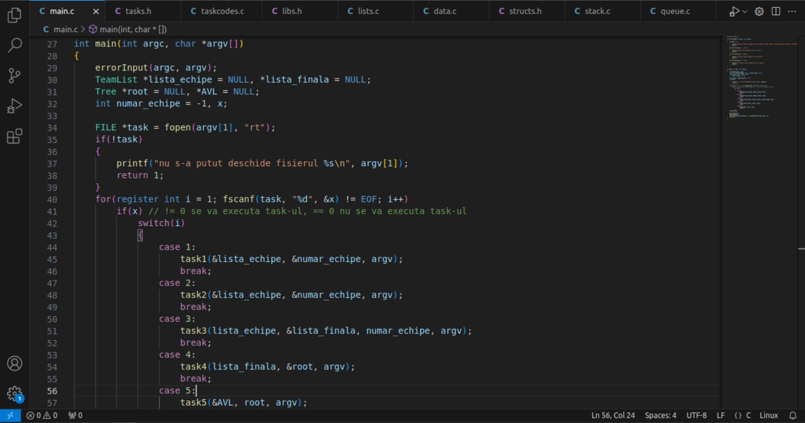
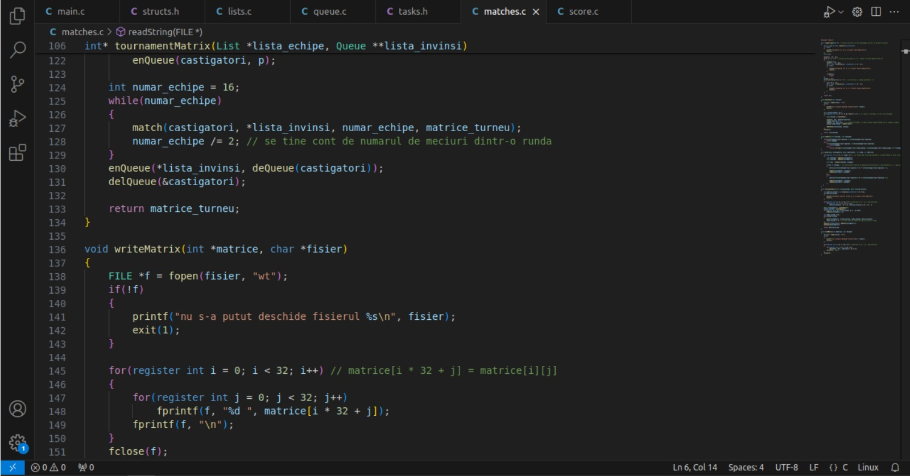
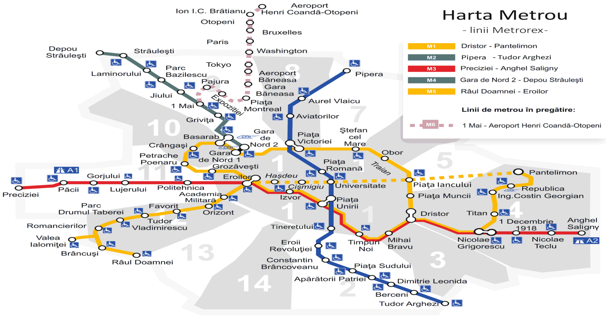
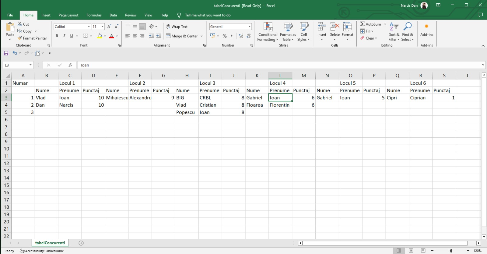
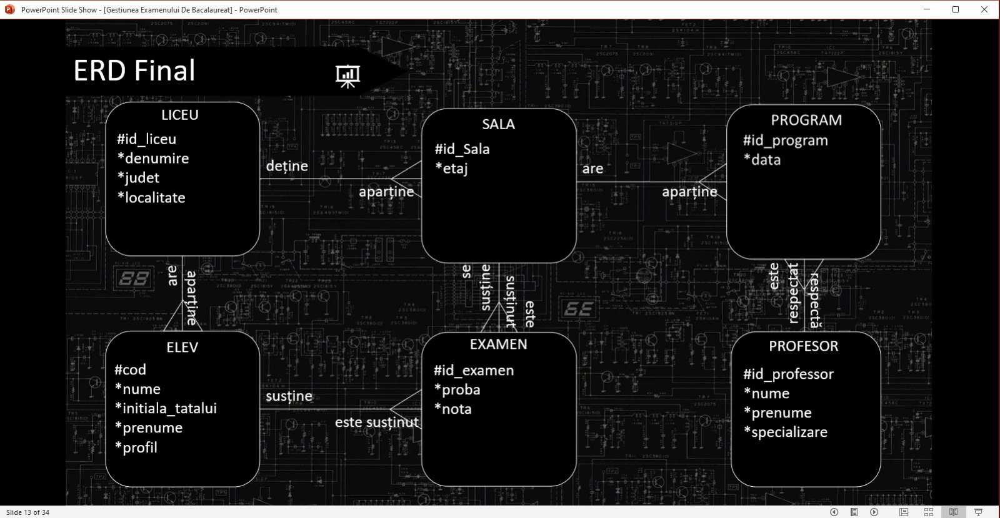
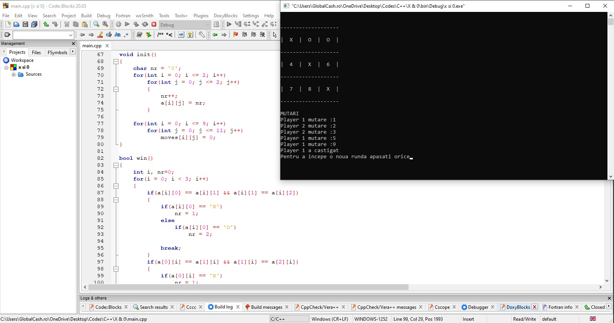

/* The Faculty of Automation and Computers, through LSAC, organizes a LAN Party every semester where all students who want to test their skills in a specific game participate. The goal is to create a software solution (executable program) that can automate this process. */
My Projects in Automation and Programming
Additional details on GitHub
GITHUB


HOMEWORK 2 - DESIGN OF ALGORITHMS
MORE DETAILS/* In the case of a single tournament, like the one you simulated in Homework 1, creating the participants' ranking is not an issue: the first place is occupied by the winner of the final, and the last place is occupied by the player/team who hasn't won any matches, etc. However, when considering the results of multiple competitions, things get more complicated: two players may have the same number of victories, but if one of them has a victory against a world champion, this victory should count for more. */
Language: C

THE SHORTEST ROUTE - METRO
MORE DETAILS/* To get from one place to another (in Bucharest), one solution is to use the metro, but it is important to choose the most efficient route, in order to reach the destination in the shortest time possible. The solution to the problem involves finding the shortest path, in terms of the number of stations. */
Language: C

CREATING A RANKING IN EXCEL
MORE DETAILS/* In a contest, it is very important to list the competitors based on the scores they obtained. Therefore, creating a ranking, based on the results achieved by them, in an Excel document is a good choice, as managing the ranking becomes much easier. In a well-formatted table, per the position obtained, it is much easier to observe the positions occupied by the respective individuals. */
Language: C

DRAFT PROJECT - MANAGEMENT OF THE BACHELOR'S EXAMINATION
MORE DETAILS/* The baccalaureate exam represents an essential stage in a person's life, meaning it requires extremely good organization. Taking into account the necessary staff, such as teachers, assistants, and students taking the exam, each needs a separate rubric with different information, which must be managed and stored properly. Therefore, we need a well-structured database to optimize the effort and process of using it. */
Language: SQL

Tic Tac Toe - Console Game
MORE DETAILS/* Implementation of a game of Tic Tac Toe on the console, requiring 2 players, who will enter from the keyboard the positions in which they want to enter the move. */
Language: C++